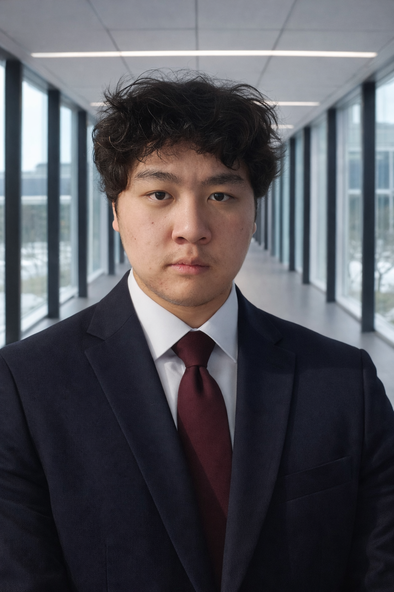

3,000+
students on the platform I keep online at ~99.5%

Tian Yi Tong Full-Stack & Autonomous Systems · Waterloo CSFront end, back end, and the box it runs on. The proof I'd point to first: Osmia, my autonomous trader — 4 months unattended, calling direction 64% right across 380+ live-scored verdicts. Not a backtest.
University of Waterloo, Honours CS — 3.93/4.00. The work I'm proudest of mostly happened off the syllabus: production codebases with real users, and systems that either work the first time or visibly don't.
| Logged | Asset | Call | Hzn | Result |
|---|---|---|---|---|
| 14:02 | BTC | ▲ long | 6h | ✓ hit |
| 11:30 | ETH | ▼ short | 4h | ✓ hit |
| 09:15 | SOL | ▲ long | 8h | ✗ miss |
| 06:48 | BTC | ▼ short | 4h | ✓ hit |
| 04:12 | LINK | ▲ long | 6h | ✓ hit |
| 01:50 | ETH | ▲ long | 4h | ✗ miss |
Sub-100ms sync across 20+ concurrent users and 1,000+ events per session — zero state-divergence bugs over 200+ sessions.
A drone built from scratch — 3D-printed airframe, ArduPilot, Raspberry Pi. The full control stack runs identically in SITL and on hardware.
A 3D scientific visualizer with a rendering pipeline written from scratch — transforms, triangulation, projection.
Remy — multi-agent orchestration, up to 6 concurrent agents · Loan-default model — 82% AUC-ROC on 10k records · and the rest of my builds.
Strongest end to end on the Python + TypeScript path — React and Next up front, FastAPI behind it, Linux and systemd underneath. The honest depth on each:
Languages: Python · C++ · C# · C · TypeScript · JavaScript · SQL · PowerShell · Embedded & robotics: GDB · ArduPilot · MAVLink · SITL · PID control · OpenCV · Math: real analysis · probability · linear & abstract algebra
What I'm building this term — both are code that has to work the first time, on real hardware.
Test coverage and register-level debugging on safety-critical modules for a car built to race 3,000 km. C · GDB · Unity.
3D-printed airframe, ArduPilot, Raspberry Pi. ~30 cm precision landing via PID + OpenCV — same control stack in SITL and on hardware.
I'm after full-stack, platform, and autonomous-systems roles where the bar is high and the feedback is honest. Tell me what you're building — I read everything that lands here.